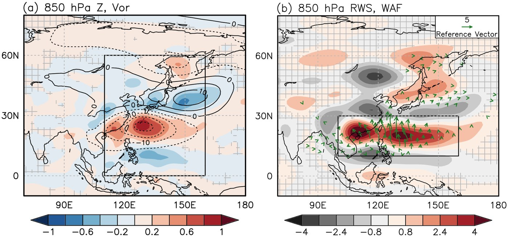

01
Rossby Waves & East Asian Heatwaves 로스비파와 동아시아 폭염
The Pacific–Japan pattern carries tropical convective energy poleward as a quasi-stationary Rossby wave train. I quantify how this wave guide sets the timing, intensity and persistence of extreme heat over Korea and Japan — and how the meridional wave component has been changing.
태평양–일본(PJ) 패턴은 열대 대류 에너지를 준정상 로스비파 형태로 고위도까지 전달합니다. 이 파동 경로가 한국과 일본의 극한 고온의 발생 시점·강도·지속성을 어떻게 결정하는지, 그리고 남북 방향 파동 성분이 어떻게 변해왔는지를 정량화합니다.